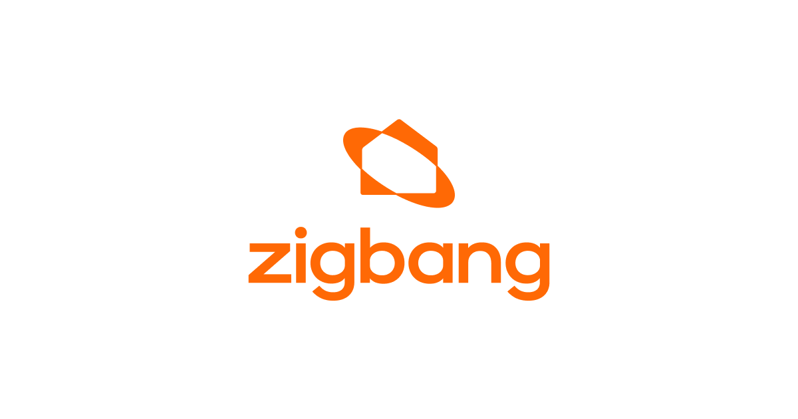

홈 > 브랜드 매거진 > 직방
직방
직방(Zigbang)은 대한민국의 부동산 중개·정보 플랫폼을 운영하는 프롭테크 기업이다.
산업 분야 기술·전자 · 공개 등급 자료 기반 · 브랜드 평가 4 ★

한눈에 보는 브랜드
직방(Zigbang)은 부동산 정보 비대칭 해소를 내건 한국의 대표 프롭테크 플랫폼이다. 안성우 대표가 2010년 11월 '채널브리즈'라는 이름으로 설립했고, 2012년 '직접 찍은 방 사진'을 뜻하는 직방 앱을 출시하며 모바일 부동산 시대를 열었다.
첫 전환점은 20·30 1인가구를 겨냥한 원룸·오피스텔 전월세 매물 정보 장악이었고, 두 번째는 아파트·스마트홈으로의 확장이었다. 2015년 사명을 직방으로 바꿨고 2021년 중소벤처기업부 유니콘으로 선정됐다.
2024년 월간이용자 약 229만명으로 부동산 앱 1위를 기록했다.
브랜드 관점
직방의 본질은 매물 사진을 표준화해 발품 노동을 모바일 탐색으로 대체한 원룸 중개 정보 플랫폼이라는 점에 있다. 가장 큰 차별점은 두 갈래 확장이다.
첫째, 2022년 삼성SDS 홈IoT 사업을 약 966억원에 인수해 도어록·월패드·로비폰 등 하드웨어로 내려가 매물 탐색에서 주거 인프라까지 잇는 수직 통합을 시도했다. 둘째, 2021년 온택트파트너스로 공인중개사와 수수료를 나누며 중개업에 직접 발을 들였는데, 이는 한국 독자에게 익숙한 '플랫폼 대 골목상권' 충돌을 격발했다.
공인중개사협회는 생존권 침해·매물 가로채기라 반발했고 수수료 배분이 50대 50에서 70대 30으로 바뀌었다는 논란까지 번졌다. 전략적 함의는 명확하다.
광고 중개 수익만으로는 부동산 침체기 성장 정체를 못 넘기에 하드웨어·직접중개·메타버스로 사업을 다각화했으나, 본업과 신사업 모두 방향이 흔들리며 적자가 누적됐다. 한국 독자에게 직방은 프롭테크가 정보 격차를 좁힌 성공 사례인 동시에, 플랫폼 권력과 전통 중개업의 이해 충돌을 압축한 사례로 읽힌다.
시작과 성장
직방의 출발은 모바일 보급과 부동산 정보 불투명이 겹친 2010년대 초 한국이다. 서울대 통계학과를 나와 회계법인과 벤처캐피털을 거친 안성우 대표는 자취방을 구하며 부동산을 발품 팔던 경험을 바탕으로 2010년 11월 채널브리즈를 세웠다.
초기 소셜커머스 '포스트딜'은 시장 반응을 얻지 못해 대부분의 창업 멤버가 떠나는 실패를 겪었다. 첫 전환점은 2012년 직방 앱·웹 출시로, '직접 찍은 방 사진'이라는 발상이 허위·과장 매물에 지친 20·30 1인가구의 신뢰를 끌어내며 원룸·오피스텔 전월세 시장을 장악했다.
두 번째 전환점은 원룸을 넘어 아파트 단지 정보·중개로 영역을 넓힌 것으로, 이용자 폭이 청년에서 가구 단위로 확장됐다. 이후 확장은 가팔랐다.
2015년 사명을 직방으로 변경했고, 2021년 유니콘에 올랐으며, 2022년 삼성SDS 홈IoT를 인수해 스마트홈으로, 같은 해 가상오피스 '소마'로 사업을 넓혔다.
브랜드 아이덴티티
직방의 핵심 가치는 부동산 정보 비대칭 해소와 주거 경험의 확장이다. 2022년 CI를 전면 교체하며 'Beyond Home'을 선언했고, 집 모양 아이콘 위에 확장을 뜻하는 타원형을 얹어 프롭테크로 주거 경험을 넓히겠다는 비전을 비주얼 아이덴티티에 담았다.
시그니처 컬러는 오렌지로, 채도와 명도를 조정해 프리미엄 인상을 더했으며, 로고 표기를 한글 '직방' 대신 영문 'zigbang'으로 바꿔 글로벌 스마트홈 진출 의지를 강조했다. 1차 타깃은 모바일에 익숙하고 정보 검증을 중시하는 20·30 1인가구였고, 점차 아파트를 찾는 가구 단위로 확대됐다.
브랜드 보이스는 투명성과 편의를 앞세운 실용적·신뢰 지향 톤이다.
제품과 서비스
핵심은 원룸·오피스텔·아파트 전월세와 매매 매물을 제공하는 부동산 중개 정보 앱·웹이다. 3D·VR 단지 투어로 실내를 360도로 확인하는 기능, 아파트 관리 서비스 '우리집', 중개를 연결하는 온택트파트너스를 운영한다.
2022년 삼성SDS 홈IoT 인수로 스마트 도어록·월패드·로비폰 등 스마트홈 하드웨어를 추가했고, 같은 해 글로벌 가상오피스 '소마'를 선보였다. 채널은 모바일 앱, 웹, 스마트홈 디바이스를 아우른다.
현재 상태
본사는 서울특별시에 있으며 한국 기업이다. 창업자 안성우가 대표를 맡고 있다.
골드만삭스 PIA 등 국내외 기관에서 누적 약 3,285억원을 유치했고 한때 2조원대 기업가치를 인정받았으나, 부동산 침체로 평가가치가 크게 하락했다는 보도가 있다. 정확한 현재 지분 구조는 회사가 공개하지 않아 미공개다.
2024년 매출 약 1,014억원에 영업손실 약 287억원을 기록했고, 2025년 구조개편으로 EBITDA 적자를 대폭 축소하며 턴어라운드 조짐을 보였다고 발표했다.
타임라인
정리된 연도형 이벤트가 없습니다.
BI/CI 변천사
함께 읽을 브랜드
Un
Uniqode
기술·전자 · 편집 검수UniqodeUniqode는 2025년에 기록된 Technology 계열의 브랜드 아이덴티티 사례입니다. Koto가 아이덴티티 작업의 디자이너로 기록되어 있습니다. 공개 섹션 정...
 기술·전자 · 편집 검수British Rail
기술·전자 · 편집 검수British RailBritish Rail는 1969년에 기록된 Historical 계열의 브랜드 아이덴티티 사례입니다. Design Research Unit, Gerald Barney...
Ju
Jupi
기술·전자 · 편집 검수JupiJupi는 2025년에 기록된 AI Brands 계열의 브랜드 아이덴티티 사례입니다. How&How가 아이덴티티 작업의 디자이너로 기록되어 있습니다. 공개 섹션 정보...
 기술·전자 · 편집 검수Mozilla
기술·전자 · 편집 검수MozillaMozilla는 2024년에 기록된 Technology 계열의 브랜드 아이덴티티 사례입니다. jkr가 아이덴티티 작업의 디자이너로 기록되어 있습니다. 공개 섹션 정보...
Ro
Robin
기술·전자 · 편집 검수RobinRobin는 2025년에 기록된 AI Brands 계열의 브랜드 아이덴티티 사례입니다. Otherway가 아이덴티티 작업의 디자이너로 기록되어 있습니다. 공개 섹션...
 기술·전자 · 자료 기반카카오
기술·전자 · 자료 기반카카오카카오(Kakao)는 2006년 김범수가 설립한 한국의 인터넷·모바일 플랫폼 기업으로, 국민 메신저 카카오톡을 운영한다.
 기술·전자 · 편집 검수Cazoo
기술·전자 · 편집 검수CazooCazoo는 2025년에 기록된 Digital Products & Services 계열의 브랜드 아이덴티티 사례입니다. Fold7Design가 아이덴티티 작업의 디자...
기술·전자 · 편집 검수DropboxDropbox는 2017년에 기록된 Digital Products & Services 계열의 브랜드 아이덴티티 사례입니다. Collins가 아이덴티티 작업의 디자이너...